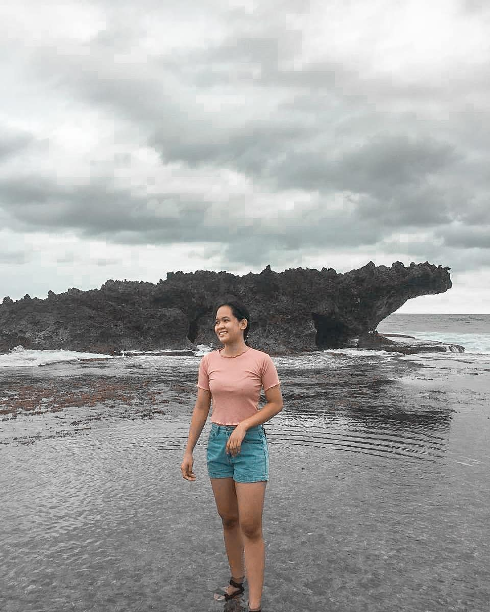

My Gallery
One of the best ways to make yourself happy in the present is to recall happy times from the past. Photos are a great memory-prompt, and because we tend to take photos of happy occasions, they weight our memories to the good.
-Gretchen Rubin
